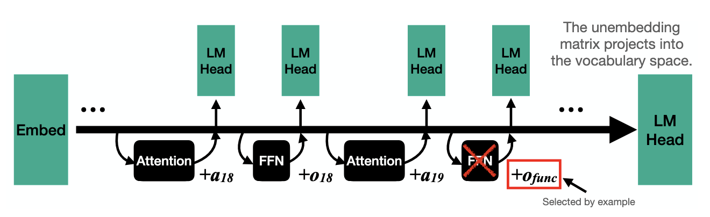

What is in a word embedding?

Background: Word Vector Arithmetic
In their famous word2vec paper, Mikolov et al. (2013) showed that they could train word embeddings that reflected intuitive parallelogram-like structure. The classic example was that of a consistent "gender vector" in embedding space, where they showed that the difference between the vector for man and the vector for woman was basically equal to the difference between king and queen. In other words, if you added (man - woman) to queen, you could actually get the vector for king.
Concept and Token Induction
In our previous paper on the "Dual-Route Model of Induction" (Feucht et al., 2025), we isolated two types of induction heads, attention heads in LLMs that are responsible for copying text. We found that token induction heads, originally described by Elhage et al. (2021), are responsible for verbatim copying, whereas concept induction heads were responsible for copying whole word representations.
Our Approach
In this work, we investigate whether we can use Llama-2-7b's internal hidden states as word embeddings that operate like Mikolov et al. (2013)'s vectors. Let's say we want to see if Llama-2-7b's hidden states encode country-capital city relationships. For every country and capital in their dataset, we pass that word through Llama-2-7b (with the prefix "She travelled to" to ensure that it understands each word as a location). We can then take the activations for that word at the last token position as an embedding for that word, and perform word2vec arithmetic with all of these separate hidden states.
Related Work
Language Models Implement Simple Word2Vec-style Vector Arithmetic. Jack Merullo, Carsten Eickhoff, and Ellie Pavlick. 2023.
Notes: Merullo et al. (2023) find a very similar phenomenon in GPT2-Medium: they show that feed-forward sublayers in later layers of the model will actually output get_capital(x) function vectors (similar to Todd et al. (2024)) that, when added to Poland, cause the model to output Warsaw. These may be the very same vectors we obtain when calculating Athens - Greece in concept space, because they occur at mid-late layers, after concept induction has taken place. In other words, we speculate that the feed-forward components of later model layers have learned to work within the output subspace of concept induction heads, taking advantage of this semantic rich structure to perform word2vec-style operations.
 Oliver McLaughlin, Arjun Khurana, and Jack Merullo. I Have No Mouth, and I Must Rhyme: Uncovering Internal Phonetic Representations in LLaMA 3.2. 2025.
Oliver McLaughlin, Arjun Khurana, and Jack Merullo. I Have No Mouth, and I Must Rhyme: Uncovering Internal Phonetic Representations in LLaMA 3.2. 2025.
Notes: Where we focus on semantic and token-level representations of words in this work, McLaughlin et al. find evidence of models also representing phonemic information about words, despite having no explicit access to how words actually sound. This is another example of LLMs encoding implicit information about words that has little to do with the semantics of those words.
 Sheridan Feucht, Eric Todd, Byron Wallace, and David Bau. The Dual-Route Model of Induction. 2025.
Sheridan Feucht, Eric Todd, Byron Wallace, and David Bau. The Dual-Route Model of Induction. 2025.
Notes: Our own previous work: we use the same concept/token lens approach described in Section 5.
How to cite
This work was accepted at the NeurIPS Mech Interp Workshop (2025). It can be cited as follows:
bibliography
Sheridan Feucht, Byron Wallace, and David Bau. "Vector Arithmetic in Concept and Token Subspaces." Second Mechanistic Interpretability Workshop at NeurIPS (2025).
bibtex
@inproceedings{feucht2025arithmetic,
title={Vector Arithmetic in Concept and Token Subspaces},
author={Sheridan Feucht and Byron Wallace and David Bau},
booktitle={Second Mechanistic Interpretability Workshop at NeurIPS},
year={2025},
url={https://arithmetic.baulab.info}
}